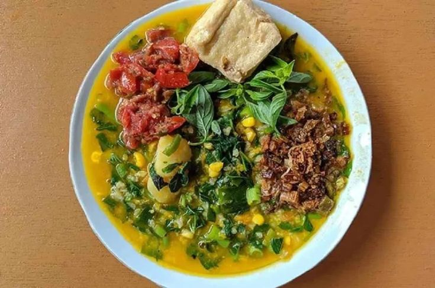
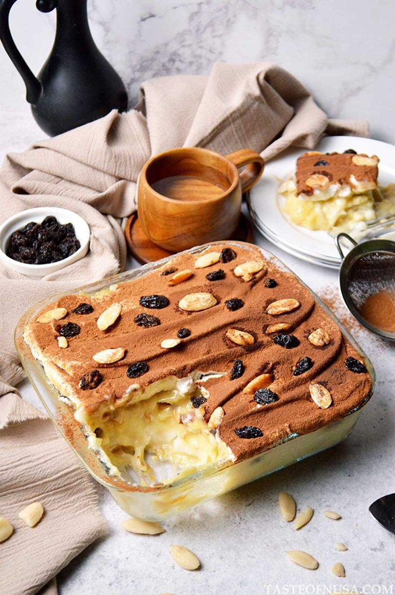

Cita Rasa Asli Sulawesi Utara
Jelajahi kelezatan kuliner khas Manado yang kaya rempah dan penuh cerita tradisi Minahasa sejak ratusan tahun.

Kehangatan Pagi di Manado
Nikmati semangkuk Tinutuan yang kaya akan sayuran segar, jagung, dan ubi jalar penambah energi di pagi hari.

Manisnya Warisan Tradisi
Manjakan lidah Anda dengan kelembutan Klappertaart dan ragam kue jajanan tradisional peninggalan kolonial.